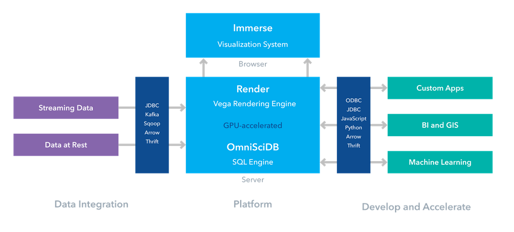
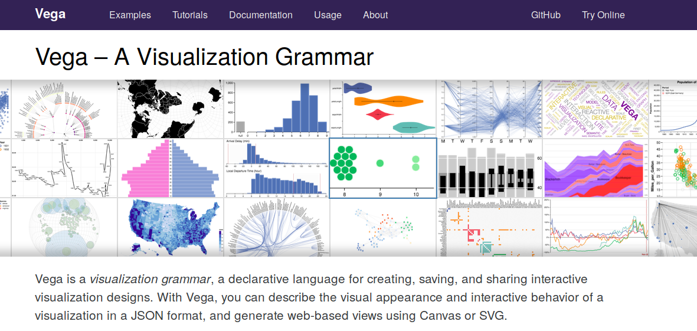
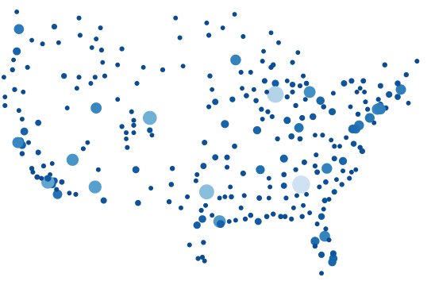
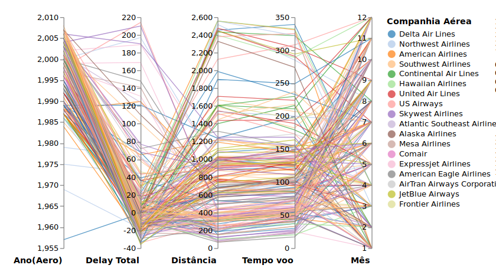
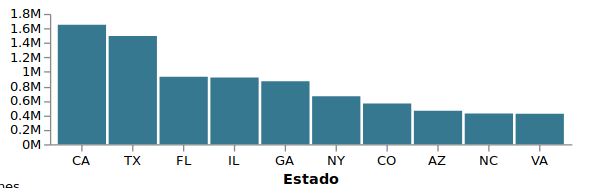
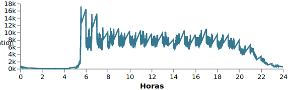
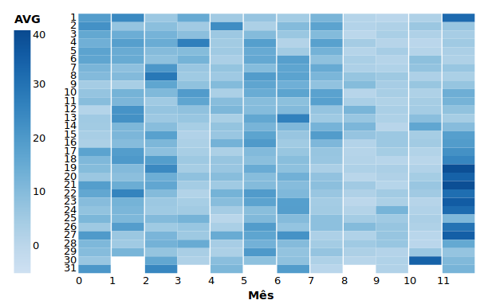

Flights
Cecília Carneiro e Silva
15/10/2019
Base de Dados
Informações sobre os voos comerciais norte americanos no ano de 2008.
56 atributos (colunas).
7 milhões de linhas.
Atributos
| Duração do voo |
| Distância |
| Origem e destino |
| Atraso chegada e atraso partida |
| Informações sobre as aeronaves |
| etc |
Dados
Dados publicos e muito divulgados.
Base (consideravelmente) grande.
Diversos dados nulos.
OmniSci
Hardware Accelerated DB (GPU).
Escalabilidade e performance para lidar com Big Data.
GPU-accelerated analytics database (NVIDIA friendly).
Arquitetura

SQL engine, Vega Rendering Engine, Visualization System.
OmniSciDB
Open-source.
SQL nativo. Query JIT compilation.
Column Oriented e vetorização de queries.
Gerenciamento avançado de memória (arquitetura de memória GPU).
Vega

Jeffrey Heer. Universidade de Washington.
Abstração de declarativa (reativa) sobre bibliotecas imperativas, como D3.js.
Vega, Vega-lite, Altair.
JSON: aparência visual e comportamentos interativos.
DSL
| Propriedades Básicas (tamanho). |
| Dados a serem visualizados. |
| Eixos e legendas. |
| Projeções cartográficas. |
| Marcações Gráficas. |
Vega Spec
{
"$schema": "https://vega.github.io/schema/vega/v5.json",
"width": 400,
"height": 200,
"data": [],
"signals": [],
"scales": [],
"axes": [],
"marks": []
}
OmniSci + Vega
const connection = new (window as any).MapdCon()
.protocol("http")
.host("localhost")
.port("6278")
.dbName("omnisci")
.user("admin")
.password("**");
OmniSci + Vega
const result = await QueryCore._session.queryAsync(_.query);
result.forEach(ingest);
Renderização
connection.connectAsync().then(session => {
QueryCore.session(session);
(vega as any).transforms["querycore"] = QueryCore;
const runtime = vega.parse(spec);
const view = new vega.View(runtime)
.logLevel(vega.Info)
.renderer("svg")
.initialize(document.querySelector("#view"));
view.runAsync();
});
Objetivos visualização
Como o tráfego aéreo está distribuídos nos aeroportos?
Uniformemente?
Ou majoritariamente dominado por alguns terminais?
Quais estados possuem maior tráfego aéreo?
Qual é o comportamento temporal, ao longo dos dias e meses, de uma série de informações: tempo de atraso, quantidade de partidas e decolagem, tempo de voo.
Como se comportam atributos como: tempo de atraso e distância percorrida (tempo de voo), há alguma correlação entre os mesmos?
Layout
Mapa
| x | y | cnt |
|---|---|---|
| 215 | 132 | 10087 |
| 295 | 169 | 65795 |
| 187 | 39 | 1464 |
| 291 | 125 | 2117 |
| 82 | 212 | 708 |
| 332 | 131 | 6406 |
| 277 | 101 | 414513 |
| 191 | 164 | 3037 |
| 253 | 174 | 350380 |
| 280 | 119 | 14004 |
Spec
{
...,
"data": [
{
"name": "heatmap_query",
"transform": [query_hexagonal_map]
},
{
"name": "heatmap_stats",
"source": "heatmap_query",
"transform": [
{
"type": "aggregate",
"fields": ["cnt", "cnt"],
"ops": ["min", "max"],
"as": ["mincnt", "maxcnt"]
}
]
}
],
"scales": [
{
"name": "xscale",
"type": "linear",
"domain": {"data": "map_size", "fields": ["minx", "maxx"]},
"range": "width"
},
{
"name": "heat_color",
"type": "pow",
"domain": {"data": "heatmap_stats", "fields": ["mincnt", "maxcnt"]},
"range": { "scheme": "blues" },
"reverse": true
}
],
"marks": [
{
"type": "symbol",
"from": {
"data": "heatmap_query"
},
"encode": {
"update": {
"shape": { "value": "circle" },
"xc": {
"scale": "xscale",
"field": "x"
},
"yc": {
"scale": "yscale",
"field": "y"
},
"size": { "scale": "heat_size", "field": "cnt" },
"fill": {
"scale": "heat_color",
"field": "cnt"
}
}
}
}
]
}
Mapa

Bem distribuído.
Mapa = dados contextualizados.
Coordenadas paralelas
| flight-month | distance | airtime | delay | carrier-name | plane-year |
|---|---|---|---|---|---|
| 4 | 2454 | 339 | -1 | Delta Air Lines | 1957 |
| 12 | 383 | 70 | -18 | Northwest Airlines | 1969 |
| 1 | 814 | 120 | 44 | Northwest Airlines | 1975 |
| 11 | 231 | 39 | 63 | Northwest Airlines | 1979 |
| 12 | 432 | 59 | -38 | Northwest Airlines | 1980 |
| 9 | 887 | 118 | -24 | American Airlines | 1984 |
| 1 | 920 | 140 | 2 | Southwest Airlines | 1985 |
| 5 | 632 | 99 | -1 | Northwest Airlines | 1986 |
| 7 | 965 | 136 | 3 | Continental Air Lines | 1986 |
| 9 | 258 | 46 | -8 | American Airlines | 1986 |
Coordenadas paralelas

Correlações (ou não) entre os atributos.
Gráfico de barras
| category | amount |
|---|---|
| CA | 1649194 |
| TX | 1495300 |
| FL | 933996 |
| IL | 922474 |
| GA | 871562 |
| NY | 662666 |
| CO | 561710 |
| AZ | 463622 |
| NC | 423640 |
| VA | 421404 |
Gráfico de barras

Estados com maior tráfego aéreo.
Gráfico de linhas
| category | amount |
|---|---|
| 1 | 566 |
| 2 | 428 |
| 3 | 429 |
| 4 | 420 |
| 5 | 460 |
| 6 | 397 |
| 7 | 392 |
| 8 | 357 |
| 9 | 366 |
| 10 | 427 |
Gráfico de linhas

Horário de partida dos voos.
Heat Map
| temp | flight-dayofmonth | flight-month |
|---|---|---|
| 19.01395373799173 | 1 | 0 |
| 22.16528885192976 | 2 | 0 |
| 16.11230573746457 | 3 | 0 |
| 13.75858134920635 | 4 | 0 |
| 17.38641912223925 | 5 | 0 |
| 16.82242115124388 | 6 | 0 |
| 12.06601578308377 | 7 | 0 |
| 10.48508437385716 | 8 | 0 |
| 4.608085172041352 | 9 | 0 |
| 7.445702264075336 | 10 | 0 |
Heat Map

Atrasos no fim do ano.
Scatter plot
| arrdelay | depdelay | airtime | category |
|---|---|---|---|
| 2 | 19 | 113 | Southwest Airlines |
| -20 | -5 | 143 | Southwest Airlines |
| 9 | -4 | 93 | Expressjet Airlines |
| 66 | 75 | 48 | Mesa Airlines |
| -15 | -9 | 57 | Skywest Airlines |
| -16 | -3 | 108 | United Air Lines |
| -25 | 0 | 49 | Atlantic Southeast Airlines |
| 26 | 46 | 155 | American Eagle Airlines |
| 24 | 4 | 331 | American Airlines |
| -12 | -1 | 126 | American Airlines |
Scatter plot

Delays x tempo de voo x companhias aéreas.
Considerações Finais
Diversos layouts (ao invés de focar em um super interativo).
As interações são limitadas por enquanto.
Trabalhos futuros
Poderia usar técnicas similares com outro backend. (Comparações possíveis).
Segunda versão mais incrementada para o trabalho final.
Dados mais desafiadores.